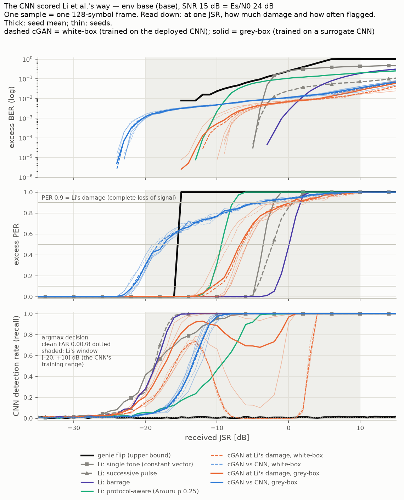
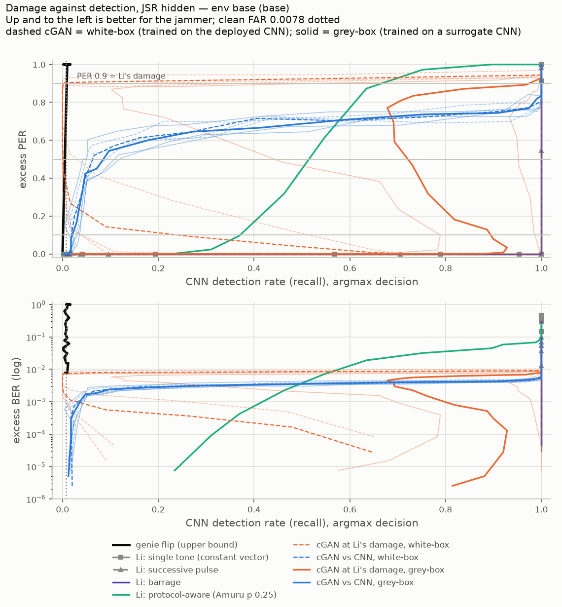
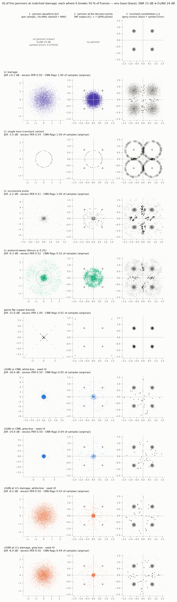
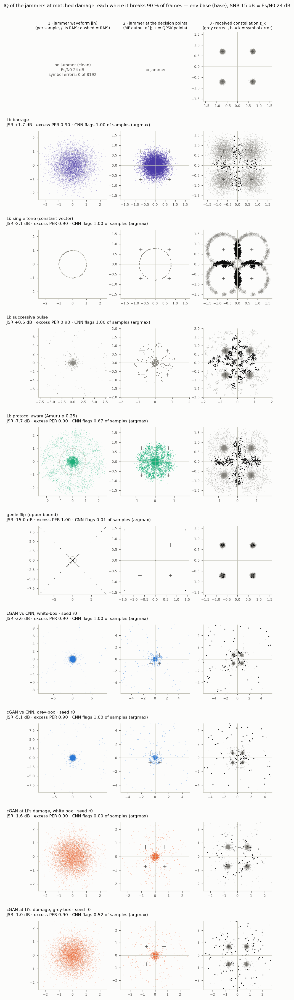

Li-Protocol CNN Readout
The CNN of Li et al. (IEEE Access 2022), retrained on our link, scored the way Li et al. score it: per sample, with the network's own argmax decision, by detection rate, precision, recall, F-score and false-alarm rate. Jammers: Li's four types and our CNN-targeted cGANs. The attacker is grey-box: it trains against its own copy of the CNN and never sees the deployed weights.
The short answer
- matches Li Our CNN, scored Li's way, behaves like Li's. Pooled over Li's four types it gets DR 92.6 % (Li: 100 %) at a false-alarm rate of 0.78 % (Li: 0.03 %). Per type it flags 67–94 % of jammed samples over −20…+10 dB. It is lower because at 15 dB the bottom of that range lies below the noise.
- holds grey-box At partial damage the cGAN breaks the CNN without knowing its weights. Trained on a surrogate CNN, it is flagged on 0.026 ± 0.013 of samples where it breaks 10 % of frames and 0.090 ± 0.042 where it breaks 50 %. The white-box version: 0.023 and 0.068. Li's jammers at the same damage: 37–100 % and 52–100 %.
- caught At Li's damage it does not. Li's jammers cause a complete loss of signal; here that is 90 % of frames broken. The grey-box cGAN gets there at −4.6 dB and is caught on every sample. Li's protocol-aware type does better there (0.67).
- does not transfer The cGAN trained at Li's damage only works white-box. Trained on the deployed weights, it was invisible to the CNN while breaking up to 93 % of frames. Trained on the surrogate, two of three seeds are flagged on 93–100 % of samples across its band. The third is flagged on 10–31 % from −8 to −2 dB. Its blind spot belongs to one set of weights.
- Most damage while flagged on at most half the samples: grey-box cGAN PER 0.676 ± 0.049; protocol-aware 0.32; barrage, tone and pulse comb 0. The grey-box cGAN at Li's damage: 0.88, 0 and 0 per seed.
- What the IQ plots show: the cGAN is a sparse burst jammer matched to the victim's pulse. It lands 6× more energy on the decision points than white noise, and it pushes only 1–3 % of symbols hard: close to Amuru's low-duty pulsed jammer. The variant at Li's damage puts most of its energy where the receiver's filter does not listen (0.7–0.8×), which costs it about 9 dB.
Li's protocol, on our link
Li et al. never count symbols. Their unit is a sample: one spectrogram image, a screenshot of GNU Radio's waterfall display. They report detection rate DR = correctly predicted samples / all samples (their eq. 2a), precision, recall, F-score, and FAR = FP / (FP + TN). What we copy, and what we cannot:
| Li et al. | here |
|---|---|
| one sample = one waterfall image; the time it spans is stated neither in the paper nor in their dataset repository | one sample = one 128-symbol frame (128 µs at 1 MBd), rendered at Li's 422 × 248 image size. The CNN and every generator were trained on this window |
| two-class softmax, decided by argmax | the same: a frame is flagged when logit(jammed) > logit(clean). Clean FAR on 4096 frames: 0.78 % |
| 762 clean : 204 per jammer type, 70/30 split | the CNN was trained that way. The metrics below apply Li's 762 : 204 balance to the measured rates (TP = 204 × recall, FP = 762 × FAR) |
| EfficientNet-B0: DR 100 % two-class, 99.79 % five-class, weighted FAR 0.03 % (five-class) | our CNN on its own validation set (JSR −20…+10 dB): accuracy 92.2 %, jammed samples detected 85.4 %, 0 false alarms in 220 clean samples |
| jammed samples recorded at the distance where every jammer causes "a complete loss of signal" | read as matched damage: each jammer at the JSR where it breaks 90 % of frames (excess PER 0.9), with PER 0.1 and 0.5 for the partial-damage range |
Our CNN is less accurate than Li's because at 15 dB the bottom third of its training range lies below the noise. There, a jammed frame looks like a clean one, and it does no damage either.
Two windows. Li's window puts every jammer at the same powers, uniform in dB over −20…+10 dB, as a direct comparison with Li's numbers. That compares jammers at matched configuration, where they do very different damage, so it is one row per jammer and not the result. Matched damage reads each jammer where it breaks 10, 50 and 90 % of frames. That is the main table.
Jammers
| jammer | what it is on our link |
|---|---|
| Li: barrage | white complex Gaussian noise over the band |
| Li: single tone | a tone at the carrier is a constant complex baseband value: the supervisor's constant IQ vector. Its direction is random per frame (no carrier-phase knowledge) |
| Li: successive pulse | an impulse every 64 samples (a comb of 64 lines over the band) |
| Li: protocol-aware | the victim's own RRC-QPSK waveform with random symbols, each on with probability 0.25 at amplitude 2. This is Amuru & Buehrer's pulsed jammer at p 0.25. Li give no duty cycle, so p 0.25 is our adaptation |
| cGAN vs CNN | Zhou's generator, trained on log E[BER] − 10 · Pdet (soft) against a CNN, JSR band −39…−7 dB, 3 seeds |
| cGAN at Li's damage | each cGAN seed trained further on lost frames, log E[PER] − 10 · Pdet (soft), only at −10…0 dB where Li's jammers break 90 % of frames, 4000 steps; see below |
| genie flip | the upper bound: knows every symbol and flips it. The received signal has exactly the clean statistics, so no detector can see it |
Grey-box attacker
A jammer that knows the deployed network's weights is not realistic. The grey-box attacker knows what the defender runs (Li's CNN, trained Li's way) but not its weights. It trains its own copy, the surrogate: same recipe, different seed (12 instead of 11), validation accuracy 93.7 % vs the deployed CNN's 92.2 %. Everything it needs for training comes from the surrogate: the detection term, the threshold, and the JSR band (−38.8…−6.8 dB, vs −39.0…−7.0 dB from the deployed CNN). It is then evaluated against the deployed CNN like every other jammer. The white-box generators (trained on the deployed CNN) stay in the tables and are drawn dashed; they use the same seeds, so the weights are the only difference.
Figures


Matched damage (main table)
Recall is the share of that jammer's samples the CNN flags, at the JSR where the jammer breaks 10 / 50 / 90 % of frames (interpolated between 1 dB grid points). DR and F-score at PER 0.9 are Li's eq. 2a and 2d on a 762 clean : 204 jammed set. Argmax decision; darker cells = more often caught. Dashed key = white-box.
| jammer | PER 0.1 | PER 0.5 | PER 0.9 = Li's damage | |||||
|---|---|---|---|---|---|---|---|---|
| JSR dB | recall | JSR dB | recall | JSR dB | recall | DR % | F-score | |
| genie flip (upper bound) | -15.0 | 0.010 | -15.0 | 0.010 | -15.0 | 0.010 | 78.5 | 0.019 |
| Li: single tone (constant vector) | -4.3 | 1.000 | -3.5 | 1.000 | -2.1 | 1.000 | 99.4 | 0.986 |
| Li: successive pulse | -4.2 | 1.000 | -2.2 | 1.000 | 0.6 | 1.000 | 99.4 | 0.986 |
| Li: barrage | -1.6 | 1.000 | 0.1 | 1.000 | 1.7 | 1.000 | 99.4 | 0.986 |
| Li: protocol-aware (Amuru p 0.25) | -11.0 | 0.373 | -9.3 | 0.521 | -7.7 | 0.668 | 92.4 | 0.787 |
| cGAN at Li's damage, white-box | -9.1± 1.8 | 0.181± 0.270 | -6.6± 1.4 | 0.010± 0.017 | 1.0± 2.3 | 0.169± 0.186 | 81.8± 3.9 | 0.255± 0.264 |
| cGAN vs CNN, white-box | -21.7± 0.6 | 0.023± 0.006 | -18.2± 0.5 | 0.068± 0.022 | -4.3± 0.7 | 1.000± 0.000 | 99.4± 0.0 | 0.986± 0.000 |
| cGAN at Li's damage, grey-box | -9.5± 2.2 | 0.925± 0.118 | -7.0± 1.7 | 0.798± 0.310 | -0.1± 0.8 | 0.839± 0.274 | 96.0± 5.8 | 0.881± 0.180 |
| cGAN vs CNN, grey-box | -21.6± 0.7 | 0.026± 0.013 | -17.8± 1.1 | 0.090± 0.042 | -4.6± 0.6 | 1.000± 0.000 | 99.4± 0.0 | 0.986± 0.000 |
The same at α 0.05 (the paper's operating point, realised FAR 5.3 %)
| jammer | PER 0.1 | PER 0.5 | PER 0.9 = Li's damage | |||||
|---|---|---|---|---|---|---|---|---|
| JSR dB | recall | JSR dB | recall | JSR dB | recall | DR % | F-score | |
| genie flip (upper bound) | -15.0 | 0.053 | -15.0 | 0.053 | -15.0 | 0.053 | 75.8 | 0.084 |
| Li: single tone (constant vector) | -4.3 | 1.000 | -3.5 | 1.000 | -2.1 | 1.000 | 95.8 | 0.910 |
| Li: successive pulse | -4.2 | 1.000 | -2.2 | 1.000 | 0.6 | 1.000 | 95.8 | 0.910 |
| Li: barrage | -1.6 | 1.000 | 0.1 | 1.000 | 1.7 | 1.000 | 95.8 | 0.910 |
| Li: protocol-aware (Amuru p 0.25) | -11.0 | 0.622 | -9.3 | 0.758 | -7.7 | 0.863 | 92.9 | 0.838 |
| cGAN at Li's damage, white-box | -9.1± 1.8 | 0.527± 0.372 | -6.6± 1.4 | 0.121± 0.160 | 1.0± 2.3 | 0.549± 0.487 | 86.3± 10.3 | 0.542± 0.470 |
| cGAN vs CNN, white-box | -21.7± 0.6 | 0.107± 0.018 | -18.2± 0.5 | 0.233± 0.058 | -4.3± 0.7 | 1.000± 0.000 | 95.8± 0.0 | 0.910± 0.000 |
| cGAN at Li's damage, grey-box | -9.5± 2.2 | 0.997± 0.006 | -7.0± 1.7 | 0.993± 0.012 | -0.1± 0.8 | 0.999± 0.002 | 95.8± 0.0 | 0.910± 0.001 |
| cGAN vs CNN, grey-box | -21.6± 0.7 | 0.117± 0.028 | -17.8± 1.1 | 0.293± 0.116 | -4.6± 0.6 | 1.000± 0.000 | 95.8± 0.0 | 0.910± 0.000 |
Li's window: every jammer at the same powers
Recall averaged over JSR −20…+10 dB (the CNN's training range, uniform in dB), next to the damage each jammer does there. The pooled row is Li's own two-class setting: clean against their four types together.
| jammer | recall | mean excess PER | DR (eq. 2a) % | precision | F-score |
|---|---|---|---|---|---|
| genie flip (upper bound) | 0.007 | 0.84 | 78.4 | 0.204 | 0.014 |
| Li: single tone (constant vector) | 0.898 | 0.45 | 97.2 | 0.969 | 0.932 |
| Li: successive pulse | 0.944 | 0.41 | 98.2 | 0.970 | 0.957 |
| Li: barrage | 0.939 | 0.34 | 98.1 | 0.970 | 0.954 |
| Li: protocol-aware (Amuru p 0.25) | 0.674 | 0.64 | 92.5 | 0.959 | 0.792 |
| cGAN at Li's damage, white-box | 0.412± 0.005 | 0.51± 0.05 | 87.0± 0.1 | 0.934± 0.001 | 0.571± 0.005 |
| cGAN vs CNN, white-box | 0.783± 0.013 | 0.82± 0.01 | 94.8± 0.3 | 0.964± 0.001 | 0.864± 0.008 |
| cGAN at Li's damage, grey-box | 0.812± 0.181 | 0.53± 0.05 | 95.4± 3.8 | 0.964± 0.009 | 0.874± 0.117 |
| cGAN vs CNN, grey-box | 0.785± 0.026 | 0.82± 0.01 | 94.9± 0.5 | 0.964± 0.001 | 0.865± 0.016 |
| Li's four pooled (Li's two-class set, 762 : 816) | 0.864 | — | 92.6 | 0.992 | 0.923 |
The same at α 0.05
| jammer | recall | mean excess PER | DR (eq. 2a) % | precision | F-score |
|---|---|---|---|---|---|
| genie flip (upper bound) | 0.048 | 0.84 | 75.7 | 0.195 | 0.077 |
| Li: single tone (constant vector) | 0.961 | 0.45 | 95.0 | 0.829 | 0.890 |
| Li: successive pulse | 0.982 | 0.41 | 95.4 | 0.832 | 0.901 |
| Li: barrage | 0.981 | 0.34 | 95.4 | 0.832 | 0.901 |
| Li: protocol-aware (Amuru p 0.25) | 0.773 | 0.64 | 91.0 | 0.796 | 0.784 |
| cGAN at Li's damage, white-box | 0.624± 0.008 | 0.51± 0.05 | 87.9± 0.2 | 0.759± 0.002 | 0.685± 0.006 |
| cGAN vs CNN, white-box | 0.852± 0.016 | 0.82± 0.01 | 92.7± 0.3 | 0.811± 0.003 | 0.831± 0.009 |
| cGAN at Li's damage, grey-box | 0.959± 0.028 | 0.53± 0.05 | 95.0± 0.6 | 0.829± 0.004 | 0.889± 0.015 |
| cGAN vs CNN, grey-box | 0.855± 0.027 | 0.82± 0.01 | 92.8± 0.6 | 0.812± 0.005 | 0.833± 0.015 |
| Li's four pooled (Li's two-class set, 762 : 816) | 0.924 | — | 93.5 | 0.949 | 0.937 |
Pooled, Li's four give DR 92.6 % at FAR 0.78 %, against Li's 100 % and 0.03 %. The cGAN is flagged more often than protocol-aware here (0.785 ± 0.026 grey-box vs 0.674), because in this window it is mostly loud: it breaks 0.815 ± 0.009 of frames on average, protocol-aware 0.642. Jammers doing different damage at the same power is why this window is not the comparison.
The cGAN at Li's damage
Why it exists. The cGAN was trained on bit errors at −39…−7 dB. A bit objective rewards piling more errors into frames that are already broken, not breaking every frame. So its damage curve is flat: it breaks half the frames at −18 dB and needs 14 dB more to break 90 %, where it is loud. Li's damage is a lost link, so the variant is trained on lost frames where Li's jammers lose the link.
How it was trained. train_gan.py tasks cnn_li (white-box) and cnn_li_grey: the loss is −(log E[PER] − 10 · Pdet (soft)), with E[PER] exact over the noise. The JSR is drawn uniformly from −10…0 dB, where Li's four break 90 % of frames (protocol-aware at −7.7 dB, tone −2.1, pulse comb +0.6, barrage +1.7). Each seed starts from the matching cGAN seed of the same kind, 4000 steps. A random start would not learn: at these powers the CNN flags every frame, and the detection term then has no gradient. It departs from the settled BER − β · detections reward only in counting lost frames instead of bits, as run005 did.
Per seed (argmax decision):
| seed | PER 0.5 at | recall | PER 0.9 at | recall | max PER with recall ≤ 0.5 |
|---|---|---|---|---|---|
| white-box r0 | −8.2 dB | 0.029 | −1.6 dB | 0.000 | 0.95 at +2 dB |
| white-box r1 | −5.8 dB | 0.000 | +2.1 dB | 0.138 | 0.90 at +1 dB |
| white-box r2 | −5.8 dB | 0.000 | +2.6 dB | 0.369 | 0.89 at +1 dB |
| grey-box r0 | −8.9 dB | 0.441 | −1.0 dB | 0.523 | 0.88 at −3 dB |
| grey-box r1 | −5.7 dB | 0.952 | +0.6 dB | 0.996 | 0 (flagged before it damages) |
| grey-box r2 | −6.3 dB | 1.000 | +0.1 dB | 1.000 | 0 (flagged before it damages) |
Why it fails grey-box. The grey-box variants did fool the network they trained on: at the end of training their soft detection on the surrogate was 0.09–0.24 near −1…−3 dB. On the deployed CNN two of the three are caught on 93–100 % of samples. The cGAN's own stealth transfers because it is quiet: at partial damage it works below the power at which any copy of the CNN reacts. The variant is loud and hides by shaping its spectrogram so one particular network reads it as clean. Another seed of the same network reads it differently. Two more signs that this is a narrow blind spot: even white-box, the detection returns on both sides of the training band, and one-sided energy flags the variant on 86–96 % of frames at −1 dB.
IQ of the jammers
Each jammer at the JSR where it breaks 50 % of frames (first figure) and 90 % (second), on fresh frames, seed r0 for the generators. Three panels per jammer:
- its waveform at the receiver, one dot per sample, scaled to its own RMS: the shape of the signal;
- what it adds at the victim's decision points: the matched-filter output of the jammer alone at the symbol instants, in units of the symbol amplitude (+ = the QPSK points, 0.71 from the decision boundaries on the axes);
- the received constellation, symbol errors in black.
| jammer (at PER 0.5) | JSR | energy on the decision points, × white noise | symbols pushed > 0.5 | CNN flags |
|---|---|---|---|---|
| Li: barrage | +0.1 dB | 1.0 | 14 % | 1.00 |
| Li: single tone | −3.5 dB | 8.0 | 100 % | 1.00 |
| Li: successive pulse | −2.2 dB | 1.0 | 12 % | 1.00 |
| Li: protocol-aware | −9.3 dB | 7.3 | 21 % | 0.52 |
| genie flip | −15.0 dB | 7.9 | 0.8 % | 0.01 |
| cGAN vs CNN, grey-box | −19.0 dB | 6.3 | 1.1 % | 0.04 |
| cGAN vs CNN, white-box | −18.6 dB | 6.1 | 1.0 % | 0.05 |
| cGAN at Li's damage, grey-box | −8.9 dB | 0.8 | 1.7 % | 0.44 |
| cGAN at Li's damage, white-box | −8.2 dB | 0.7 | 1.8 % | 0.03 |
White noise puts 1/8 of its energy into the victim's band; a jammer matched to the victim's pulse puts nearly all of it there, which is why the tone, protocol-aware and the genie read ≈ 7–8. The cGAN is close to that (6.1–6.4) and concentrates it on about 1 % of symbols: short bursts shaped like the victim's pulse, the strategy of Amuru's low-duty pulsed jammer. The variant at Li's damage lands less on the decision points than white noise does: most of its energy is outside the band the receiver listens to, and a few sparse pushes do the damage. That wastes about 9 dB, the same gap as its later damage onset (−8 vs −19 dB at PER 0.5), and it is the extra power energy detection sees.


Constant vector: fixed or random direction
A constant IQ vector adds an offset of √JSR (in units of the symbol amplitude) to every matched-filter sample. The damage follows in closed form at Es/N0 24 dB; the random-direction row matches the measured tone (PER 0.1 at −4.4 dB predicted, −4.3 dB measured).
| vector | PER 0.1 | PER 0.5 | PER 0.9 |
|---|---|---|---|
| random direction per frame (Li's tone, measured here) | −4.4 dB | −3.6 dB | −2.0 dB |
| fixed, along one axis (needs the carrier phase) | −4.7 dB | −4.3 dB | −4.0 dB |
| fixed, diagonal | −1.9 dB | −1.5 dB | −1.2 dB |
The random and the on-axis vector are 0.3 dB apart where damage starts and 2 dB apart at PER 0.9. The CNN sees only the magnitude of the spectrogram, so the direction is invisible to it, and it flags the tone on 99 % of frames at −8 dB and on every frame from −6 dB, before either vector breaks a single frame (from −5 dB). Both variants therefore sit at recall 1.00 at every damage level. The random direction stays, because it needs no knowledge of the victim's carrier phase.
Amuru
Amuru appears only as Li's protocol-aware type (p 0.25), as decided for this readout. Two consequences:
- Zhou's "optimal" baseline is matched QPSK, which is Amuru's family at p 1. Amuru & Buehrer show that at low JSR the jammer that maximises BER against a coherent receiver is pulsed with p < 1, so the family is the stronger classical reference.
- Lower duty cycles tie the cGAN at partial damage. In the §3.3q run, Amuru at p 0.01–0.02 is flagged by this CNN on 0.10–0.12 of frames at PER 0.1 (α 0.05), level with the cGAN, and the IQ plots show why: the cGAN is itself a low-duty burst jammer. So this page supports "beats Li's four", not "beats Amuru".
Caveats
- base only. Noise uncertainty (σN 0.5 and 1 dB) is next.
- One deployed CNN (seed 11) and one surrogate (seed 12). The metrics use Li's class balance applied to measured rates, not a literal 30 % test split.
- The genie flip changes a whole number of symbols per frame (⌊δN⌋), so its PER jumps from 0 to 1 at −15 dB and every matched level reads the same point.
- Li's image spans an unknown time. If it covers many of our frames, a CNN that sees a partially damaging jammer in any of them would flag the image more often than one frame does.
- The cGAN at Li's damage was trained and evaluated on the same band; the grey-box seeds disagree with each other (0.44 / 0.95 / 1.00 at PER 0.5), so three seeds do not pin down how often it transfers. A black-box attacker (a different detector architecture) is untested throughout.
Jobs and files
- verify 103/103 and the regression gate vs S4 pass (jobs 2278626, 2278683, 2278690). The base rerun into
eval_li.json(job 2278627) reproduceseval.jsonexactly: 0 of 13,068 values differ.eval.json, which §3.3q cites, is untouched. - White-box variant: training 2278684 (array 8–10), evaluation 2278685. Grey-box: surrogate CNN 2278691 (
train_cnn.py --seed 12 --name cnn_s12), its band 2278692 (bands.py --cnn cnn_s12), cGAN 2278693 (array 11–13), variant 2278694 (array 14–16), evaluation 2278695. IQ: 2278697. All on TITAN RTX, 6.5–9 min per training job. - Code:
final/defender.pyrecords the CNN's argmax decision;final/evaluate.py --out;final/train_gan.pytaskscnn_li,cnn_b10_grey,cnn_li_grey;final/train_cnn.py --name;final/bands.py --cnn;final/attacks.frames(keep_jammer=True);final/verify.py§8 checks the frame-damage term and the returned jammer;final/li_figures.pyandfinal/iq_plots.pydraw this page's figures and tables. - Data:
artifacts/final/base/eval_li.json,artifacts/final/base/li/(li.json,table.md,iq_samples.npz, four figures),artifacts/final/base/cnn_s12/,bands_cnn_s12.json.